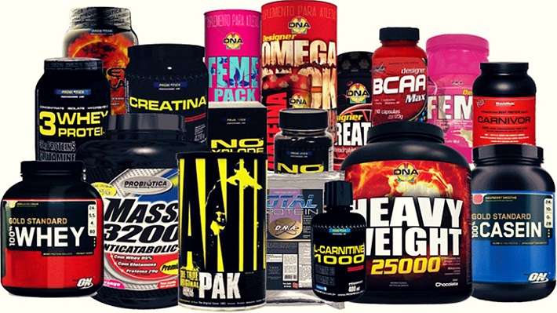

¿Que son los Suplementos Deportivos?
Los suplementos deportivos son productos que se usan para mejorar el rendimiento deportivo. Incluye un amplio abanico de productos, que además tienen distintas calidades, como las vitaminas, los minerales, los ácidos grasos omega-6 y omega’3, los aminoácidos, los fotoquímicos e incluso plantas como las algas, entre otras.
Pero tomar suplementos deportivos no es una buena idea si crees que, solo tomándolos, sin esfuerzo y trabajo vas a lograr resultados rápidos y eficaces. Es importante tener en cuenta que los suplementos o complementos deportivos no pueden sustituir a los alimentos. Como dice el nombre, son complementos, son un apoyo a una dieta correcta y equilibrada. Además, debemos saber que si los tomamos de forma irregular desconociendo sus efectos, puede llegar a ser peligroso para la salud.
En definitiva, son productos que se incluyen en la dieta de los deportistas con el fin de mejorar su rendimiento y su resistencia.
Tipos de Suplementacion Deportiva
A continuacion, vamos a mostrarte el abanico de los suplementos deportivos, para que sirven, como se ingieren y demas

Proteina
¡Las proteínas son nutrientes y como tales alimentan! Una buena proteína proporciona mejor recuperación. A mayor recuperación, más es el rendimiento. Recuerda que todo cuerpo que se recupera incrementa su mansa muscular. En esta sección encontrarás proteínas de huevo (Egg Protein) y de suero lácteo (Whey Protein). Además podrás comprar proteínas mixtas, la mezcla perfecta entre proteínas de huevo, leche y calcio.

Creatina
Las creatinas son ideales para prevenir la fatiga. A menos fatiga muscular más será tu rendimiento en el entrenamiento. También son excelentes suplementos naturales que ayudan a maximizar la recuperación del músculo luego del entrenamiento. Las creatinas pueden ser tomadas antes de entrenar y luego de entrenar. Si las tomas antes del ejercicio físico ayudan a prevenir la fatiga y si las tomas luego de la actividad física ayudan a aumentar la recuperación. Muchas creatinas de monohidrato están 100% micronizadas. El grano de creatina es ultra fino y su asimilación es mucho más rápida. Las creatinas importadas y nacionales listadas en esta categoría se encuentran aprobadas por el ministerio de salud (ANMAT) y cada una tiene sus instrucciones de toma en español.

Aminoacidos
Los aminoácidos de cadena ramificada o comúnmente llamados BCAA incluyen en su fórmula 3 de los mejores aminos. Estos aminoácidos ayudan a potenciar la recuperación de la masa muscular. Se pueden combinar con proteínas de suero de leche (Whey Protein) o de huevo (Egg Protein). También pueden ser tomados junto a creatinas, hidratantes y otros aminoácidos como la Beta Alanina o Pre Works (Pre Entrenos). Son apto para hombres, mujeres y no deben faltar en la dieta de todo deportista o persona que quiere aumentar su rendimiento físico. Los cambios son verdaderamente notables con el pasar de las semanas. Algunos aminoácidos de tipo BCAA viene en polvo y otros vienen en tabletas o cápsulas. El efecto de ambos aminos ramificados es el mismo.

Quemadores de Grasa
Muchos quemadores de grasa son llamados FAT BURNER, RIPPED FAST, LIPOTROPICOS y TERMOGENICOS. Algunos ingredientes de los quemadores son: Té Verde, Carnitina, Guaraná, Cafeína, Cromo. ¡No solo queman grasa, también aumentan tu energía! Todos los quemadores de grasa listado en esta categoría son considerados suplementos naturales para todo tipo de hombre y mujer mayor a 18 años.

Barras Proteicas
Las barras proteicas aportan Whey Protein o Suero de leche, carbohidratos, vitaminas y minerales. Son ideales para ser consumidas antes, durante o luego del entrenamiento. Prácticas y tiene un efecto saciante ante el hambre. También se las suele llamar como Power Bar o Barras energizantes. Algunos de los beneficios son: Quita del hambre, aporte de proteínas, vitaminas, minerales. Además, aportan carbohidratos, esto se traduce en más energía.

Pre Entrenos
Un suplemento natural Pre Workout (Pre Entrenamiento) nos ayuda a aumentar la energía antes y durante la actividad física. Se preparan con agua y se toman antes de entrenar. Este tipo de productos tiene grandes beneficios: mejora la masa muscular, transportan más nutrientes y oxigeno hacia la fibra muscular, fuente natural de energía, menos fatiga muscular y más concentración (Foco Mental). Los pre entrenamiento (Pre Work) se deben tomar antes o durante el entrenamiento y se recomienda 1 medida en agua. Cada uno de los productos viene saborizado y se asimilan rápidamente.

Glutamina
La Glutamina o L-Glutamina es un poderoso aminoácido, sano y natural, que nos ayuda a recuperarnos. Muchos médicos deportologos consideran a la Glutamina como el producto ideal para maximizar el rendimiento, prevenir la fatiga, aumentar la fuerza, mejorar funciones intestinales y aumentar la masa muscular. Los cambios en nuestro cuerpo son notables a las pocas semanas. El volumen muscular se incrementa y se percibe mayor fuerza, menos fatiga y más congestión muscular.
Muchos recomiendan tomar 5 a 10 gramos de glutamina por día. Una o dos cucharas en agua o en tu licuado de proteína. La mayoría de las glutaminas viene sin sabor y ultra micronizadas, esto permite una mejor asimilación.